User manual
autotag-metadata watches a folder and, whenever a new file appears, writes a sidecar
<filename>.metadata.yaml next to it containing the metadata you have prepared. The interface
follows your operating system’s light or dark theme.
The window has a two-row toolbar at the top, the metadata editor in the centre, and optional Library, Drop files, and Log panels that you can show or hide.

The main window: the two-row toolbar (with the Form / YAML switch at the far left, above the Library side panel), the central metadata editor, and the Library panel on the left. (Placeholder — to be replaced with a screenshot.)
Guided walkthrough
The quickest way to learn the interface is the built-in guided tour: open it any time from Help → Show Tour. It runs automatically the first time you start the program. The tour loads a small example document (an electrochemistry measurement), highlights each control in turn, and lets you try the interactive steps yourself; when it ends your own document and settings are restored unchanged. The screenshots below reproduce that tour step by step.
Getting started
The tour opens with the example document already loaded in the editor, so every following step has something real to act on.

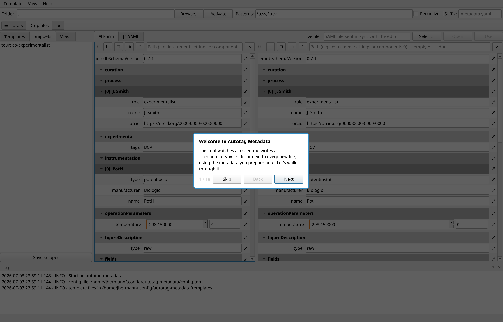
The welcome step. The tool watches a folder and writes a <filename>.metadata.yaml sidecar next to
every new file, using the metadata prepared in the editor.
Setting up the watch pipeline
The top toolbar reads left to right as the source → filter → output pipeline:
Choose a folder to watch with Browse…, then press Activate. While active, every new file that appears in the folder is tagged with the current metadata.
Filter which files with the Patterns field (comma-separated globs such as
*.csv,*.tsv; empty = all files), and tick Recursive to include sub-folders.Set the sidecar suffix in the Suffix field. Leave it empty for the default
.metadata.yaml, or type a custom ending (e.g..ec-lab.metadata.yaml) to distinguish sidecar families.

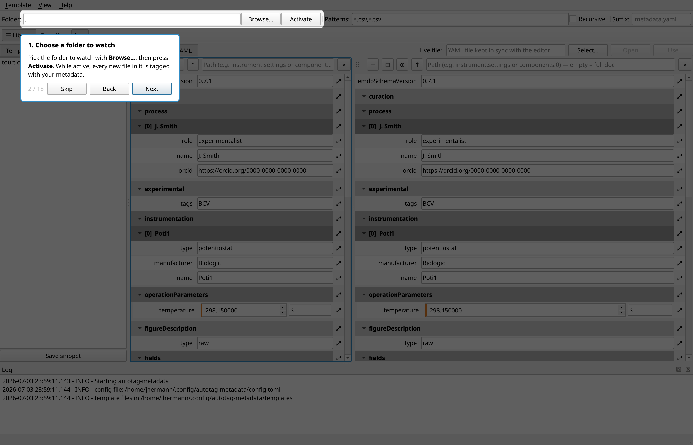
Step 1: pick the watched folder and press Activate. The Patterns, Recursive, and Suffix controls to the right refine which files are tagged and how the sidecar is named.
The metadata editor
The centre of the window is the editor, with two interchangeable views selected by the Form / YAML tabs. Both edit the same underlying document, so you can switch freely.
The Form tab renders the metadata as editable fields grouped into collapsible sections that mirror the document structure:

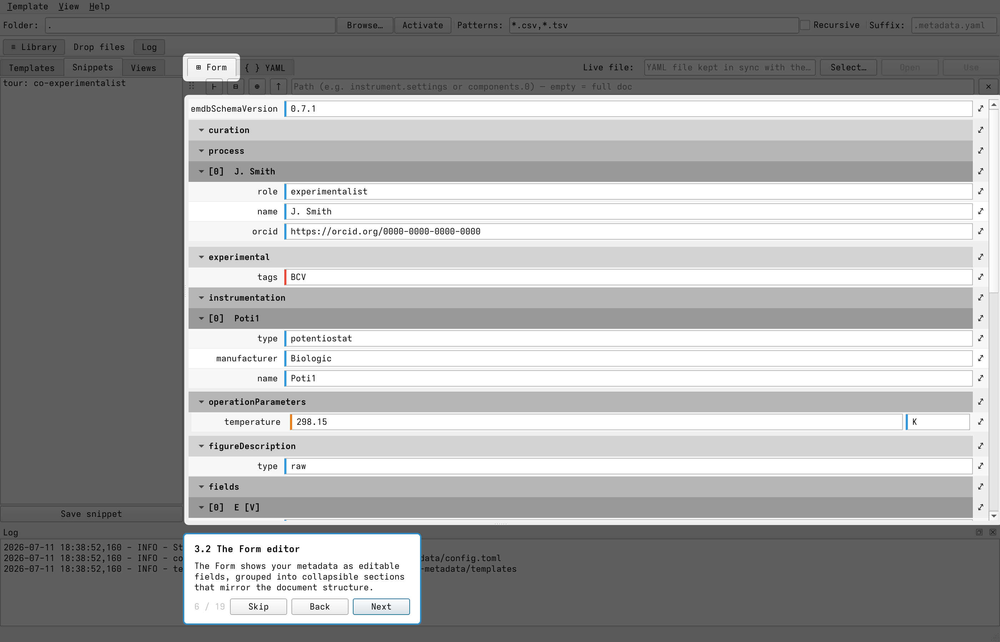
The Form editor. Nested keys become collapsible groups, value/unit pairs sit side by side, and
lists of mappings (such as electrode entries) get a [index] name heading per item.
The YAML tab shows the same document as raw text with syntax highlighting:

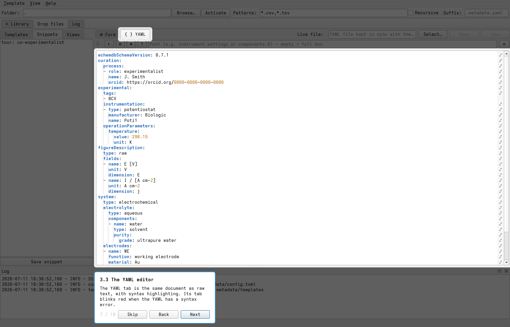
The YAML editor — the same document as raw text.
If the YAML becomes invalid, the YAML tab blinks red and the offending line is highlighted;
hover the tab for the parser’s error message. Fix the indentation (or other mistake) and the
indicator clears. In the tour, a line under system.electrodes is deliberately over-indented so
you can see — and resolve — the error:

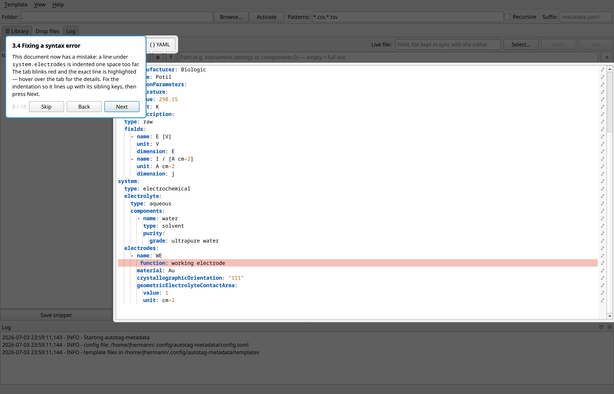
A syntax error: the mis-indented line is highlighted in red and the YAML tab blinks until it is fixed.
Reusing work with the Library
The ☰ Library button toggles a side panel with three tabs — Snippets, Templates, and Views. Each tab works the same way: click Save to add an entry (named inline in the list) and double-click an entry to apply it.

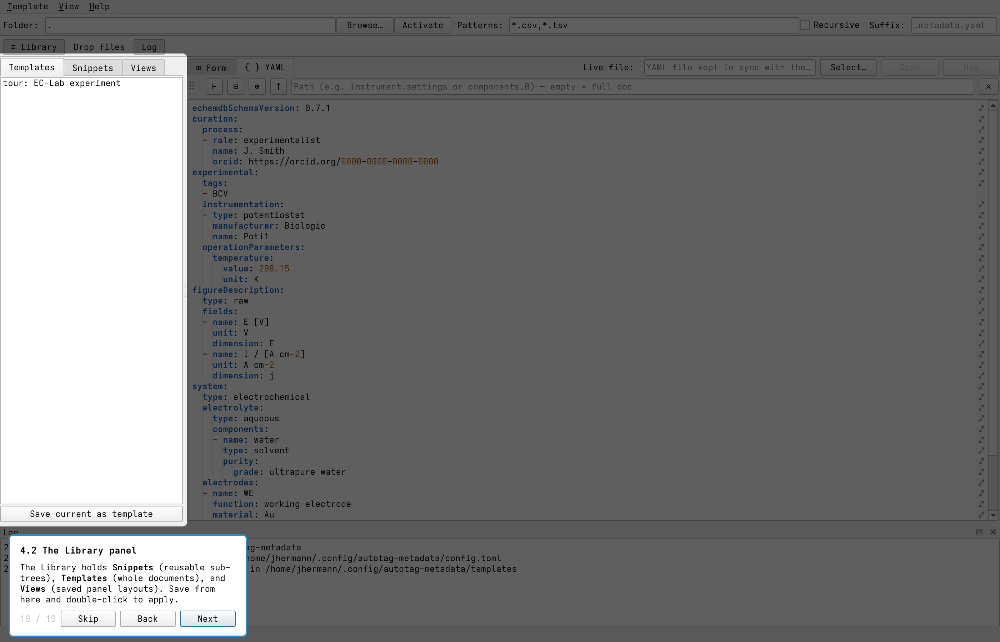
The Library panel: Snippets (reusable sub-trees), Templates (whole documents), and Views (saved panel layouts).
A template is a complete document. Double-click one to load it as the whole editor contents — ideal for starting a new measurement from a known structure:

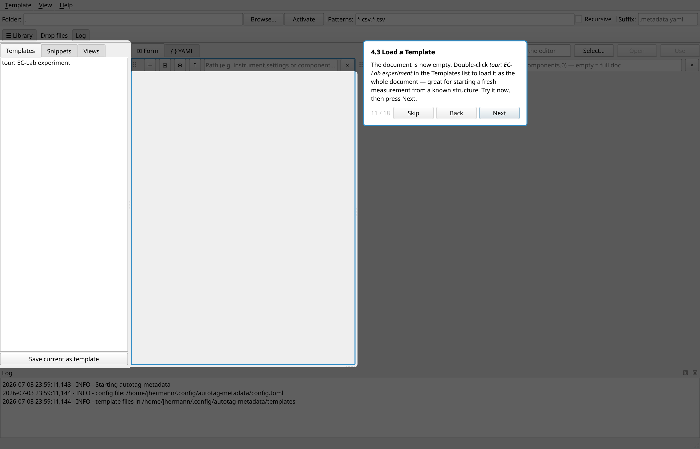
Loading the tour: EC-Lab experiment template repopulates the whole editor.
A snippet is a part of a document — a sub-tree anchored to its original path. Double-click one
to merge it in non-destructively: existing values are kept, missing keys added, and list items
matched by name so components are enriched rather than duplicated:

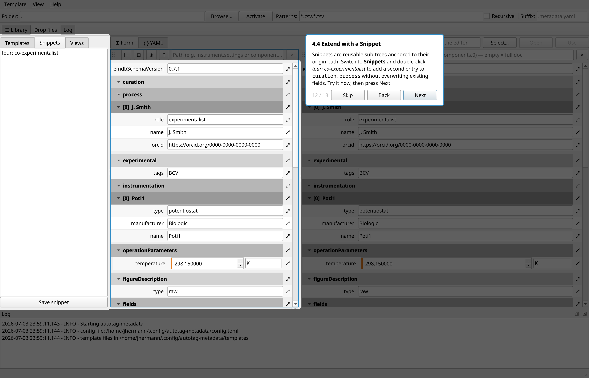
Applying the tour: co-experimentalist snippet adds a second entry under curation.process
without disturbing the existing one.
Zooming, splitting, and Views
Both editors are tiling multi-views. Every Form row carries a ⤢ button on the right that zooms the panel onto that row’s sub-tree or value; the header’s ↑ steps back up:

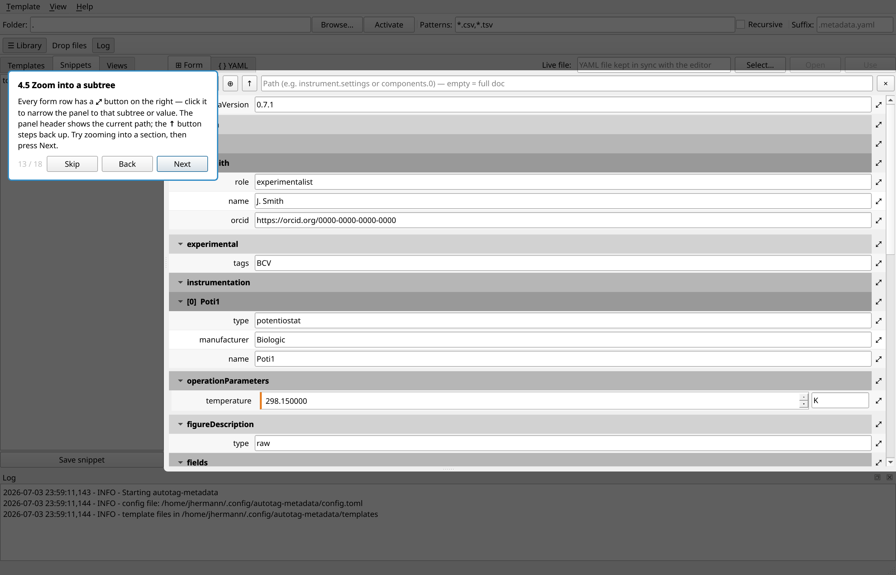
Zoom a panel onto any sub-tree with ⤢; the header shows the current path.
Click ⊢ (split right) or ⊟ (split down) on a panel header to open a second panel, so two distant parts of the document are editable side by side — each panel zooms independently:

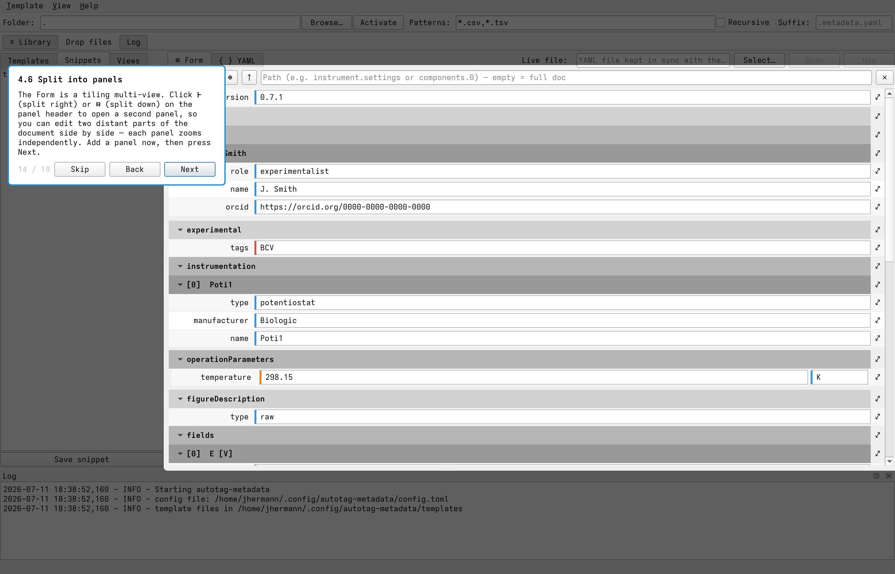
Split a panel with ⊢ / ⊟ to edit two parts of the document at once.
A view remembers how the Form is tiled. Double-click one to restore that arrangement — here a
three-panel layout onto curation, experimental, and system at once:

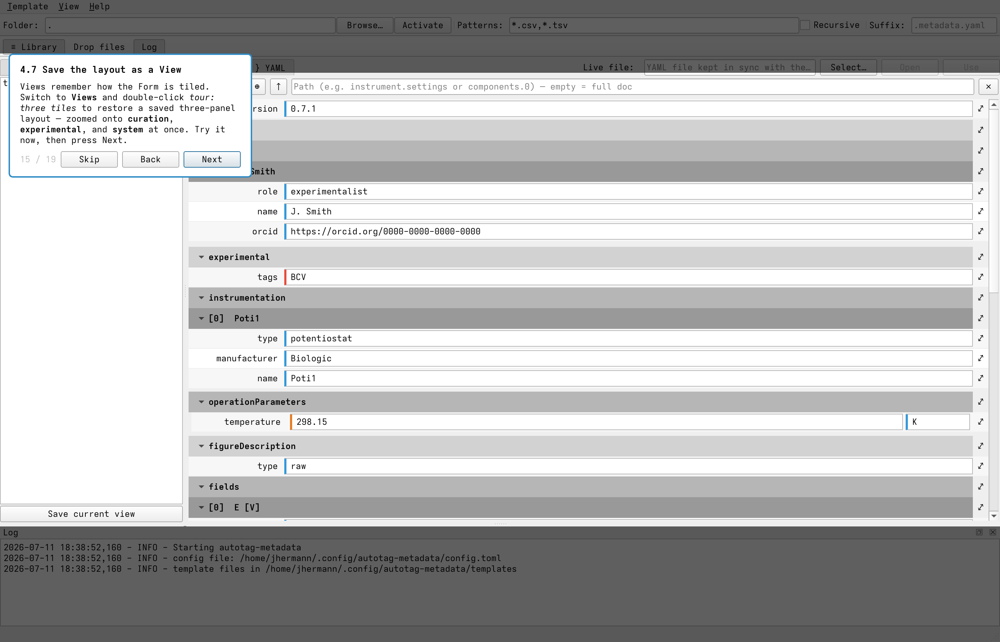
A saved view restores a multi-panel layout, each panel zoomed onto a different part of the document.
Tagging on demand and watching the log
Besides watching a folder, the Drop files toggle opens a drop zone. Drag files or folders onto it to tag them immediately with the current metadata, without activating a watch:

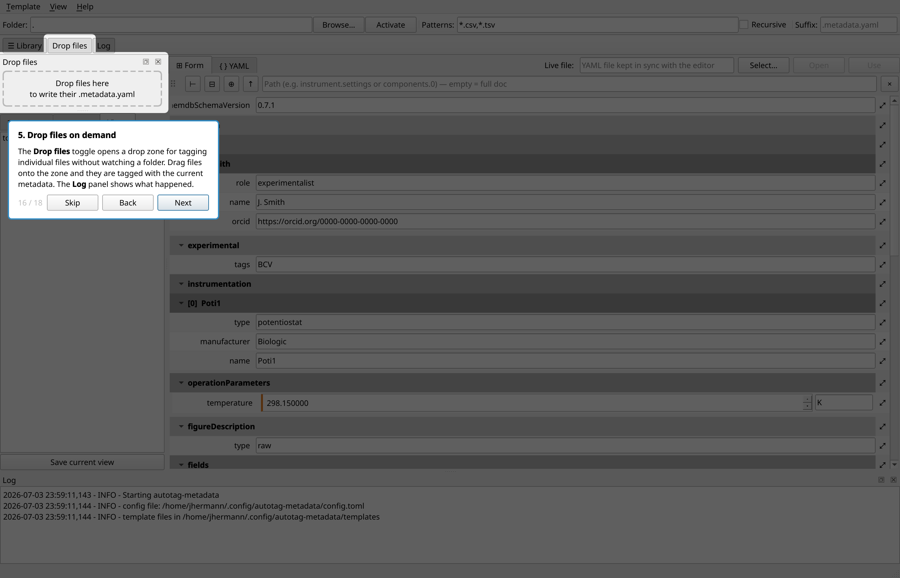
The Drop files zone tags individual files on demand.
The Log toggle reveals the log panel at the bottom, which records every tagging event, warning, and error — useful for confirming exactly which files were processed. The individual reference sections below cover each of these features in more detail.
The toolbar
Top row — actions
Control |
Purpose |
|---|---|
☰ Library |
Show / hide the Snippets · Templates · Views side panel. |
Folder field + Browse… |
Choose the folder to watch for newly created files. |
Activate |
Start / stop watching the selected folder. Files are only tagged while active. |
Form / YAML tabs |
Switch the editor between the structured form and the raw YAML text. |
Drop files |
Toggle the drop zone for tagging individual files (see below). |
Log |
Toggle the log panel. |
Bottom row — settings
Control |
Purpose |
|---|---|
Patterns |
Comma-separated filename globs (e.g. |
Recursive |
Also watch sub-folders of the selected folder. |
Live file + Select… / Use |
Mirror the current metadata to a chosen file continuously, so an external schema-aware editor can validate it as you type. Use toggles to Do not use while active. |
While watching, Activate changes to Deactivate and the window title shows the watched folder, so multiple windows are easy to tell apart.
Editing metadata
Type your metadata as YAML. When the program starts the editor is empty; for example:
experimentalist: Max Mustermann
project: degradation
starting temperature:
value: 300
unit: K
There are two equivalent views, switched with the Form / YAML tabs:
YAML tab — a raw text editor with lightweight syntax highlighting and indentation guides. The tab label turns green when the YAML is valid and red when it is not. Each key line carries a ⤢ button in the right-hand gutter to zoom the panel onto that key (see below).
Form tab — a structured form generated from the YAML. Nested keys become collapsible groups,
value/unitpairs are shown side by side, and a list of mappings (such as electrolytecomponents) becomes a collapsible list with a[index] nameheading per item. Each value gets an input matched to its type — a checkbox for true/false, a number box for numbers, a comma-separated field for simple lists, and a text field otherwise.
Edits in either view update the same underlying document, so you can move freely between them.
Elaborate examples of metadata files can be found in the example section of echemdb’s metadata-schema.
Multi-view: editing distant parts at once
Both the Form and YAML tabs are tiling multi-views and work the same way. A large metadata file often has fields you want to edit together but that live far apart in the document. Each panel can be focused on a sub-tree:
Type a dotted path in a panel’s header to zoom that panel onto that part of the document. Leave it empty to show the whole document.
Click to zoom instead of typing: on the Form tab every row has a ⤢ button that drills the panel into that row’s sub-tree or value; on the YAML tab the same ⤢ sits in the gutter beside each key line. Repeated clicks drill deeper. The header’s ↑ button steps back up one level. Both tabs zoom identically, so a click resolves the same path in either view.
Split a panel with ⊢ (split right) or ⊟ (split down) to view another path beside it.
Drag a panel by its handle (⠿) and drop it on another panel’s edge to rearrange the tiling.
Close a panel with ×.
All panels share one document, so a change in one is reflected in the others immediately. When more than one panel is open, the active panel (the one you are working in, and the source for its ⊕ snippet button) is shown with a highlighted border.

The multi-view tiling several panels onto different paths of the same document; the active panel is outlined. (Placeholder — to be replaced with a screenshot.)
Path syntax
A panel path is a sequence of keys and list indices separated by dots:
Path |
Shows |
|---|---|
(empty) |
the whole document |
|
the |
|
the |
|
the first list element ( |
|
a single leaf value, shown as one editable field |
If a path does not exist the panel shows a “not found” notice; fix the path to continue.
Snippets, Templates, and Views
Open the Library panel (☰ Library) to reuse work. It has three tabs, and all three behave the same way: click Save to add an entry — you name it inline in the list — and double-click an entry to use it. Right-click (or use the delete action) to remove one.

The Library panel: Snippets, Templates, and Views, each named inline in the list. (Placeholder — to be replaced with a screenshot.)
Templates
A template is a complete metadata document you reuse across sessions. Save the current editor contents as a template, and load it later to repopulate the whole editor. Templates are ideal for “the standard set of fields for this kind of experiment”.
Snippets
A snippet is a part of a document — a sub-tree — that you drop into place when needed. Snippets remember the full path where they were captured, so they re-insert at the correct point in the structure.
Capture: click ⊕ in a Form panel to save that panel’s sub-tree; click Save snippet at the bottom of the Snippets list to capture the active panel (the outlined one); or select lines in the raw YAML editor and choose Save selection as snippet… from the right-click menu. Any of these preserves the parent path — including the list position when you capture a single component (e.g.
components.0) or a single leaf value.Apply: double-click a snippet to merge it in non-destructively: existing values are kept, missing keys are added, and an empty (
null) placeholder is filled in. Items in a list of components are matched by theirname, so re-applying a snippet enriches the matching component (adding its missing fields) and only appends genuinely new ones — it does not create duplicates. Hold Ctrl while double-clicking to overwrite existing values instead. You can also drag a snippet onto a Form panel (merges, as above) or onto the raw YAML editor (inserts its text at the cursor).
Views
A view saves the multi-view layout: which paths each panel shows, how the panels are tiled, and each panel’s scroll position. Save a view once you have arranged panels for a particular task, and load it to return to that arrangement later.
Tagging individual files
Besides watching a folder, you can tag files on demand. Enable the Drop files panel from the toolbar and drag one or more files (or whole folders) onto it.

The Drop files panel: drop files or folders here to tag them on demand. (Placeholder — to be replaced with a screenshot.)
Each dropped file gets a
.metadata.yaml written with the current metadata. Dropped folders are searched recursively and
the Patterns filter is applied to their contents; files you drop directly are tagged regardless
of the pattern. Existing .metadata.yaml files are skipped.
Where things are stored
Settings and your saved entries live under ~/.config/autotag-metadata/:
~/.config/autotag-metadata/
config.toml window/folder settings + the template/snippet/view index
templates/ one YAML file per template
snippets/ one YAML file per snippet
views/ one file per saved layout
Note
Multiple instances of the program can be launched to watch different folders simultaneously.